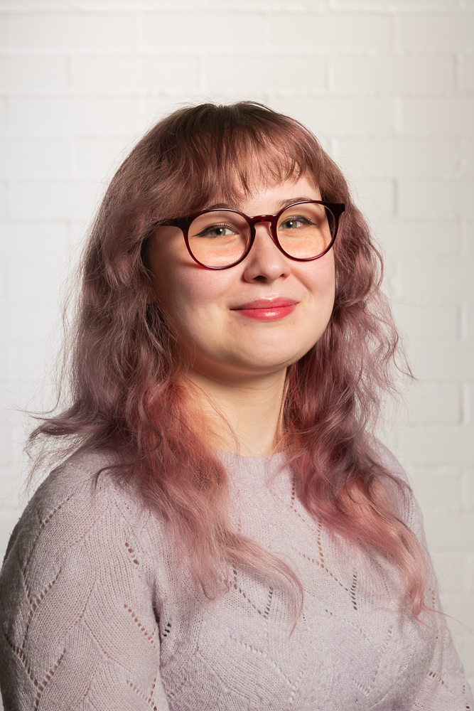

Miia Pynnönen
Hei! Olen Miia, tietojenkäsittelytieteiden opiskelija Tampereelta.
Pidän uusien asioiden oppimisesta, ja käytänkin siihen opintojen lisäksi suuren osan vapaa-ajastani.
Wikipedian ja edutainment-videoiden ohella minut voi löytää myös videopelien tai ruuanlaiton parista.
Olen myös aktiivisesti mukana ainejärjestötoiminnassa ja opiskelijakulttuurissa yleisesti.
Harrastuksiini kuuluu myös kaikenlainen näpertäminen. Vaihtelevasti saatan joko neuloa tai kirjoa, välillä saatan jopa ommella jotain.
Myös puu- ja elektroniikkatyöt ovat mieleisiä.
Mieluisimmat teknologiat
Java, Python, C++, CSS, HTML, SQL, Git, TypeScript, Linux
Viime aikoina olen myös kiinnostunut enemmän funktionaalisesta ohjelmoinnista, ja tarkoitukseni olisi tutustua tarkemmin mm. Haskell ja Lisp.